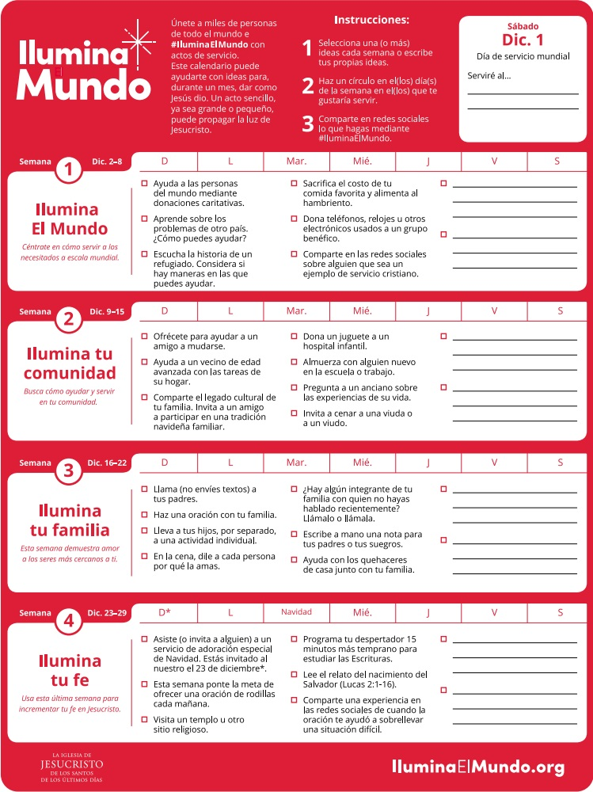

Comparte las imágenes desde la sección imágenes inspiradoras

Jesucristo, la Luz del mundo, dedicó una gran parte de Su ministerio a cuidar a las personas, una por una.
Únete a nosotros esta Navidad para seguir Su ejemplo y buscar maneras de compartir nuestro tiempo, nuestro amor y nuestros recursos con las personas necesitadas.
El amor de Jesús no tenía límites. Descubre maneras de ayudar a alguien en otra parte del mundo.
Jesús enseñó: “Amarás a tu prójimo como a ti mismo”. En lighttheworld.org encontrarás maneras de ayudar a tus vecinos o en tu comunidad.
La Biblia dice: “El que ama a su hermano permanece en la luz”.
Visita lighttheworld.org para encontrar ideas de cómo puedes demostrar amor por tu familia en esta época del año.
La Biblia dice: “Dale sentido a esta época navideña sirviendo como Él sirvió, amando como Él amó y dando como Él dio.
Descubre cómo puedes fortalecer tu fe en Jesucristo en lighttheworld.org.